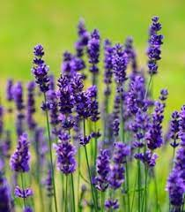

- Rose
- Lotus
- Jasmine
- Marigold
- Sunflower
- Lavender
- Tulip
- Orchid
- Hibiscus
- Lily
They come in different colours such as red, white, pink, yellow, etc. A rose plant has small and sharp thorns on its stem. The flower looks beautiful when it blooms in the garden. Rose symbolises beauty, love and compassion. The petals of a rose are soft and used in perfumes due to its fragrance.
lavender, (genus Lavandula), genus of about 30 species of plants in the mint family (Lamiaceae), native to countries bordering the Mediterranean. Lavender species are common in herb gardens for their fragrant leaves and attractive flowers. The plants are widely cultivated for their essential oils, which are used to scent a variety of products. The dried flowers, for example, have long been used in sachets to scent chests and closets, and the ancient Romans used lavender in their baths. Lavender is sometimes also used to flavour beverages and sweets and has a number of applications in herbal medicine. English lavender (Lavandula angustifolia), French lavender (L. stoechas), and woolly lavender (L. lanata) are among the most widely cultivated species
| Clients Name | Phone No | Msg | Image | |
|---|---|---|---|---|
| Shipra | Shiprakumari117@gmail.com | 6206683117 | rose is red | |
|
| Divya | Divya117@gmail.com | 6206683118 | lavender is purple in color | |
| Shipra | Shiprakumari117@gmail.com | 6206683117 | rose is red | |
|
| Divya | Divya117@gmail.com | 6206683118 | lavender is purple in color |